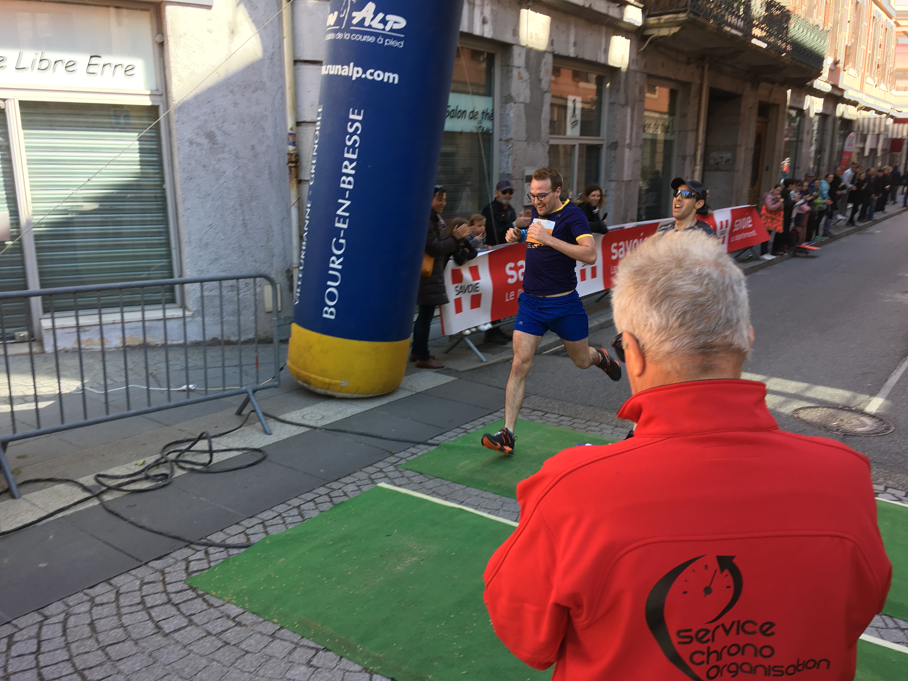

I'm a postdoctoral researcher at UBC. My research interests include renewable energy, energy storage, photophysics and novel applications of new materials. Read more about these here.
My other professional interests include: simulating physical phenomena, using machine learning and data science techniques to accelerate research, and teaching. Read more about these here.
Outside of my professional life I enjoy running, knitting, playing the trumpet and being outside.
I am an Australian who lived in Scotland for ten years and England for eight, at the University of Cambridge where I did both my undergraduate and postgraduate degrees in Experimental and Theoretical Physics. The full details are in my CV.